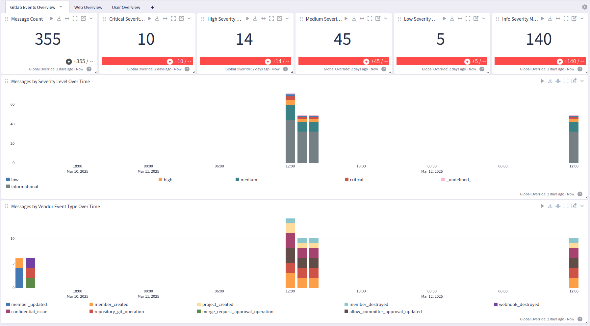
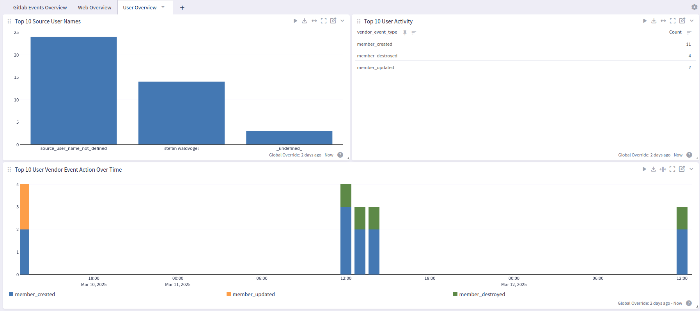
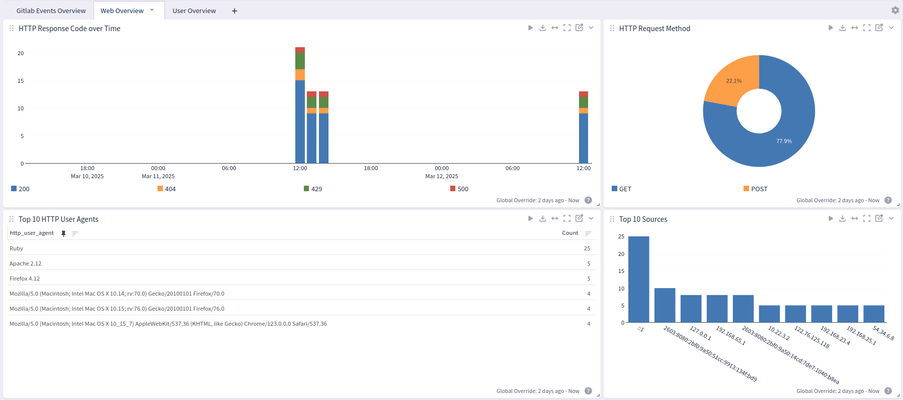

GitLab is a complete DevOps platform that provides Git-based source code management, CI/CD automation, security scanning, and project collaboration in a single application, available as both cloud-hosted and self-managed solutions. This pack parses GitLab logs.
A Graylog server with a valid Enterprise license that is running Graylog version 6.1.3 .
This pack is tested with GitLab version 17.9.
This pack requires the use of the Raw HTTP input.
This pack includes parsing rules that convert GitLab logs into Graylog schema-compatible fields. It support all known event_types.
Leverage Graylog's Raw HTTP input to receive logs directly from GitLabs via its Audit Event Streaming functionality. You can define which types of logs to send and specify Graylog as the destination endpoint. This allows seamless log forwarding from GitLab to Graylog for centralized log analysis.
Create a global Raw HTTP input in Graylog.
Configure the log source to the desired value and configure the field event_source_product with the value GitLab-web.
vendor_ prefix.
Create a new Raw HTTP input for receiving Gitlab logs, unless one already exists. This input must be used for Gitlab logs only.
In GitLab, consult the GitLab documentation to set up an HTTP destination.
Once created (or if the Raw HTTP input has already been created), click Show received messages to obtain the input ID. This will pull up a search window with the All Time timeframe. If there are a large number of logs, then you may want to adjust the timeframe to speed up the process.
Copy the gl2_source_input value.
Navigate to Enterprise >Illuminate and select the Customization tab.
Locate the lookup_adapter_input_routing title and click Edit . For the content_name key, enter the gl2_source_input ID copied earlier. For the input_id value, enter gitlab. (Note that the column names are reversed).
Select Configure value to confirm.
If receiving GitLab logs on multiple inputs, repeat this process for each input.
The GitLab content pack provides an Overview Dashboard, a Web Overview Dashboard, and a User Overview Dashboard.


